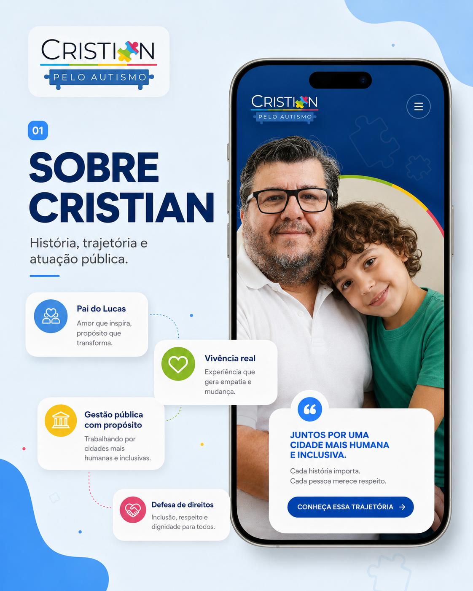
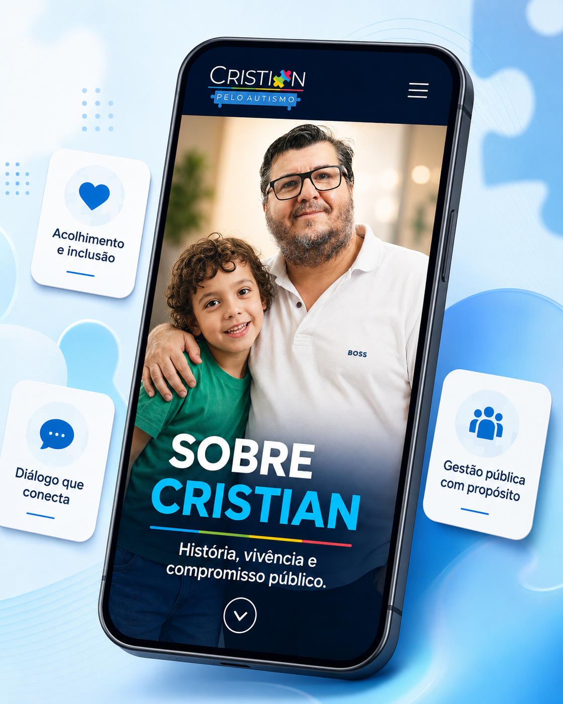
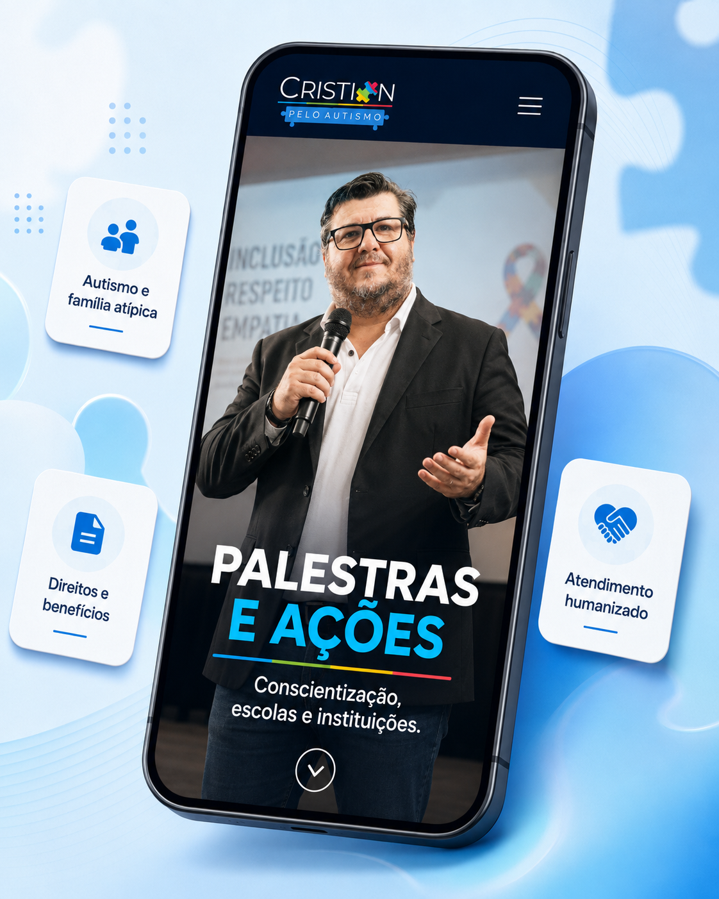
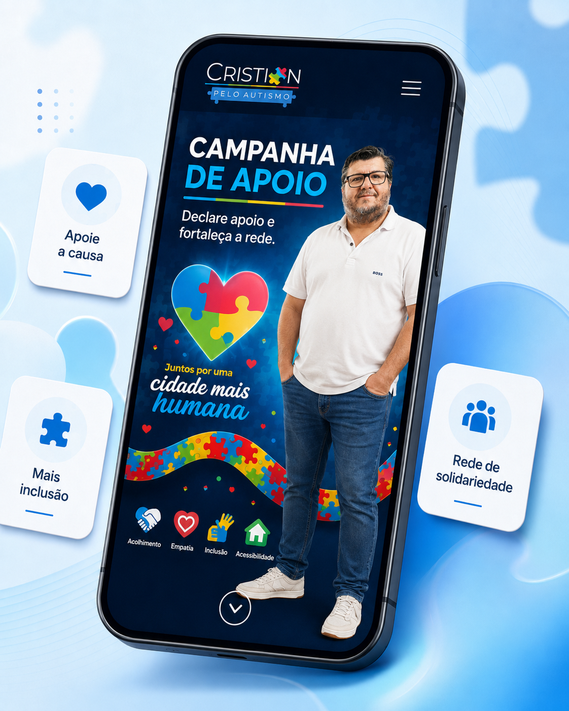
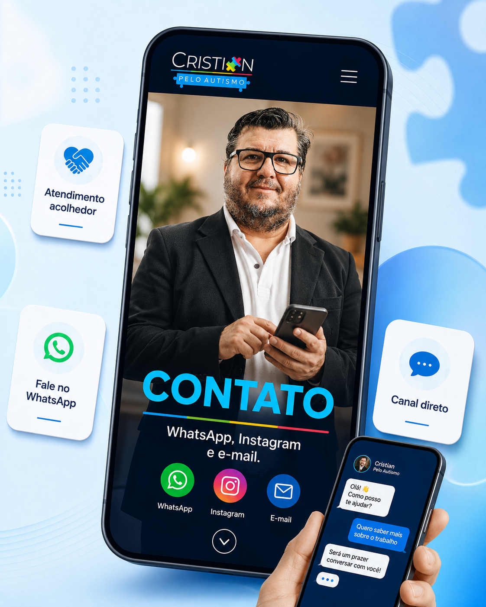
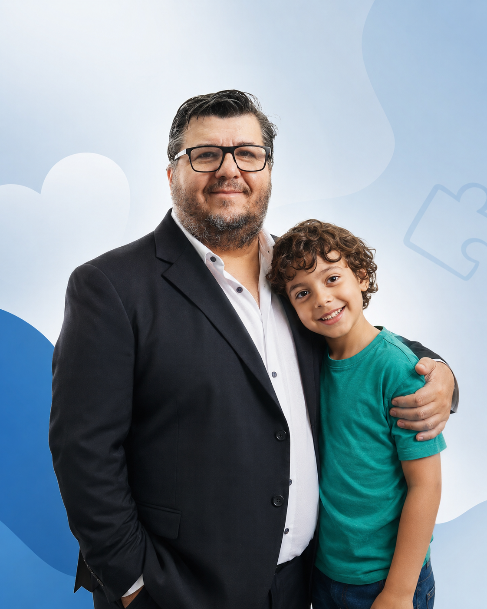
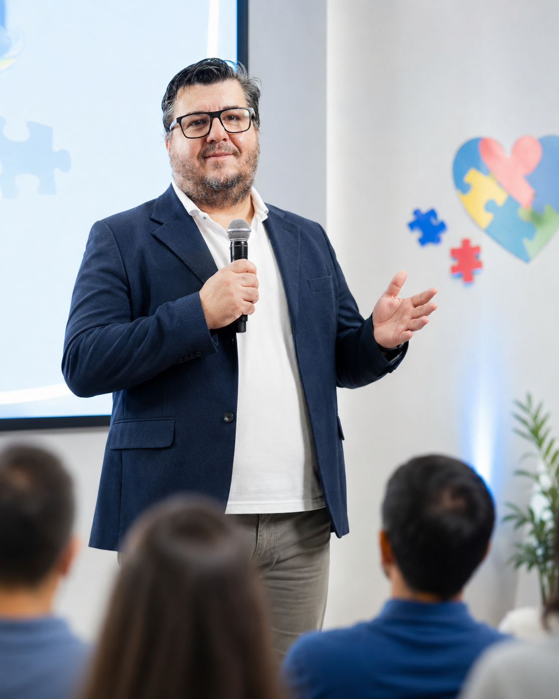

Terapia e educação especial não podem esperar.
Famílias de crianças autistas enfrentam filas, falta de profissionais, atendimento insuficiente e dificuldades para garantir inclusão escolar. Para crianças com níveis de suporte 2 e 3, a ausência de acompanhamento contínuo pode comprometer comunicação, autonomia, aprendizagem e qualidade de vida.

Quando a terapia não chega, a família inteira sofre.
Crianças autistas precisam de atendimento individualizado, continuidade terapêutica e apoio educacional compatível com suas necessidades. Porém, muitas famílias encontram serviços fragmentados, poucas vagas e longos períodos de espera.
Filas e falta de vagas
A demora para iniciar ou manter terapias interrompe avanços importantes e aumenta a sobrecarga familiar.
Suporte 2 e 3
Crianças com necessidades mais intensas precisam de equipes multiprofissionais, acompanhamento frequente e planos individualizados.
Educação especial
Inclusão escolar exige profissionais capacitados, apoio especializado, adaptação pedagógica e participação da família.
Clínica Escola do Autista.
A proposta é mobilizar a sociedade pela criação de um centro público de referência que una saúde, educação e orientação familiar em um único fluxo de atendimento.
Atendimento multiprofissional
Psicologia, fonoaudiologia, terapia ocupacional, fisioterapia, apoio pedagógico e orientação às famílias.
Plano individualizado
Acompanhamento de acordo com as necessidades, potencialidades e nível de suporte de cada criança.
Integração com as escolas
Apoio técnico para inclusão, formação de educadores e articulação entre família, saúde e educação.
Apresentação da proposta da Clínica Escola para atendimento especializado em Sumaré.
Sua assinatura ajuda a transformar uma necessidade em prioridade pública.
Ao declarar apoio, você fortalece a mobilização por terapias, educação especial e atendimento digno para crianças autistas e suas famílias.
Informação, direitos, conscientização e mobilização.

SOBRE CRISTIAN
História, vivência e compromisso.
Acessar
LEIS E DIREITOS
Leis, benefícios e caminhos.
Acessar
PALESTRAS E AÇÕES
Conscientização, escolas e instituições.
Acessar
ABAIXO-ASSINADO
Declare apoio e fortaleça a mobilização.
Assinar
CONTATO
WhatsApp, Instagram e e-mail.
Acessar
Vivência, causa e compromisso público.
Cristian Marcelo Schibelsky é pai atípico, comunicador, gestor público e idealizador do projeto Cristian Pelo Autismo. Sua trajetória une experiência familiar, atuação social e conhecimento técnico na defesa de direitos.
Entre 2017 e 2023, atuou em assessoria técnica parlamentar, contribuindo com propostas voltadas à pessoa com deficiência, ao autismo, à acessibilidade e à inclusão escolar.
Ver atuação em leisLevar informação também é promover inclusão.
Palestras, rodas de conversa e ações para aproximar famílias, educadores, instituições e comunidades do tema do autismo e dos direitos das pessoas com deficiência.
Agendar palestra
Fale com o projeto.
Canal direto para apoio à campanha, palestras, agenda de ações e contato institucional.